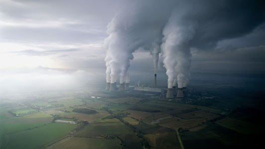

Poluição Industrial
O que é?
A poluição industrial consiste em qualquer forma de poluição que seja decorrente de atividades realizadas por indústrias. Nesse contexto, engloba todos os resíduos poluentes presentes no ar, no solo e na água e que tornam-se nocivos à saúde humana, à fauna e à flora.
Em geral, os principais agentes responsáveis pela poluição industrial são gases tóxicos, são liberados durante a queima de combustíveis (em especial, os fósseis) largamente utilizados em grandes indústrias. A exemplo, temos o metano e cádmio gases extremamente tóxicos que, se não forem devidamente tratados, acumulam-se em organismos vivos. Ademais, podemos citar a contaminação dos corpos hídricos com o lançamento de compostos químicos orgânicos e inorgânicos nos seus canais. A poluição do solo com uso de pesticidas também é um dos efeitos prejudiciais.
Dentre as principais consequências da poluição industrial por gases pode-se citar a intensificação do efeito estufa, que resulta no aquecimento global. Este, por sua vez representa um enorme impacto ambiental como elevação da temperatura do planeta, secas extremas, derretimento das calotas polares, furacões, interferência em ciclos naturais. dentre muitos outros exemplos. Os principais poluentes atmosféricos causadores do efeito estufa são o dióxido de carbono (CO2), o metano (CH4), o óxido nitroso (N2O), o ozônio (O3) e os clorofluorcarbonos (CFCs). Outros poluentes igualmente importantes são o material particulado, o monóxido de carbono (CO), dióxido de enxofre (SO2), os compostos orgânicos voláteis (VOCs), e os óxidos de nitrogênio (NOx).
Emissões de gases
Prós e contras desses efeitos
Prós
Positivamente, a diminuição da emissão dos gases em 50% ajuda na limpeza da atmosfera, além de abrir possibilidade para recuperação do meio ambiente.
Contras
Por outro lado, o fim da pandemia abrirá uma corrida para recuperação da economia de vários países, o que vai causar uma degradação da atmosfera de maneira massiva dada pelas indústrias.
Poluição vs Pandemia
Segundo o estudo feito pelo Centro de Pesquisa sobre Energia e Limpeza do Ar (CREA) — instituição independente cujo foco é analisar as relações entre a saúde e poluentes —, cerca de 11 mil mortes já foram evitadas na Europa devido à queda na concentração de sujeira na atmosfera. O Ministério de Ecologia e Ambiente da China afirma que a média de dias com boa qualidade do ar na província de Hubei — uma das áreas mais afetadas pela Covid-19 — aumentou 21,5% em fevereiro de 2020, quando comparada à média do mesmo mês no ano passado.
Pesquisadores do Centro Federal de Educação Tecnológica de Minas Gerais (CEFET-MG) analisaram os reflexos globais da redução nas taxas de poluição durante a pandemia do novo coronavírus. A análise da professora Adriana Wilken, do Departamento de Ciência e Tecnologia Ambiental (DCTA) da instituição, explica o fenômeno com efeitos positivos à saúde e ao meio ambiente em todo o mundo em período de isolamento social. Confira mais aqui
“O risco é a qualidade do ar ter uma súbita piora, pois os investimentos para voltar às atividades de uma forma geral, que baseiam-se na queima de petróleo e derivados, aumentariam fortemente a emissão de todos os poluentes citados, incluindo aqueles agravadores do efeito estufa, com consequências globais", acrescentou Wilken. A pandemia da COVID-19 é um fenômeno recente que vem ocorrendo nos últimos meses, mais especificamente, o primeiro caso de um humano contaminado foi reportado em Wuhan, China, no dia 31 de dezembro de 2019. O que significa que estamos há aproximadamente seis meses lidando mundialmente com a nova doença. Em aspectos práticos, o isolamento social e outras medidas de contenção do vírus a nível global foram adotadas gradativamente em cada região. No Brasil, a quarentena, ou o isolamento social horizontal, só foi adotado, efetivamente, a partir de meados de março. Notícias que parecem positivas como a diminuição de poluição atmosférica noticiada pela NASA;36 diminuição do fluxo fluvial de barcos e outros meios de transporte aquáticos; diminuição da pesca; desaceleramento das indústrias; diminuição da poluição sonora; ar mais limpo pela ausência de carros e outros poluentes; diminuição dos tremores no solo causados pelos carros, indústrias e afins; melhora na temperatura das ilhas calor que gera aproximação de pássaros, polinizadores etc.; diminuição das atividades extrativistas como petróleo, gás natural, minérios e outros.